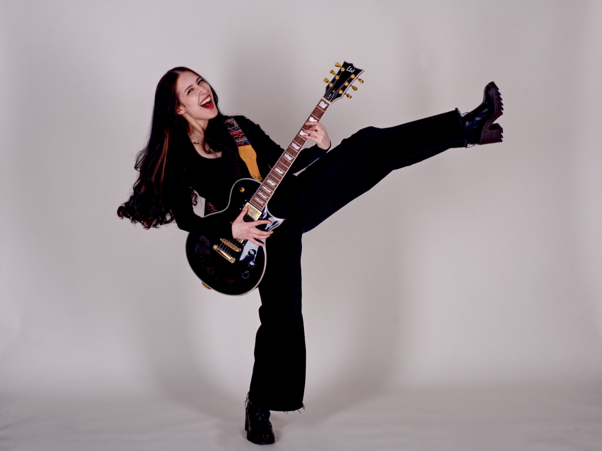
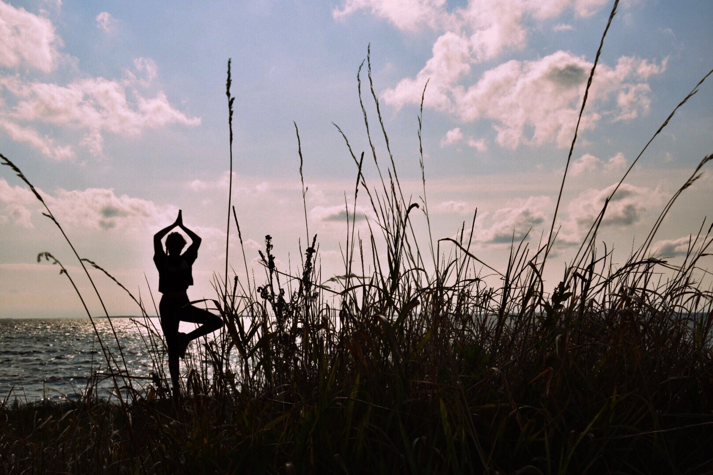
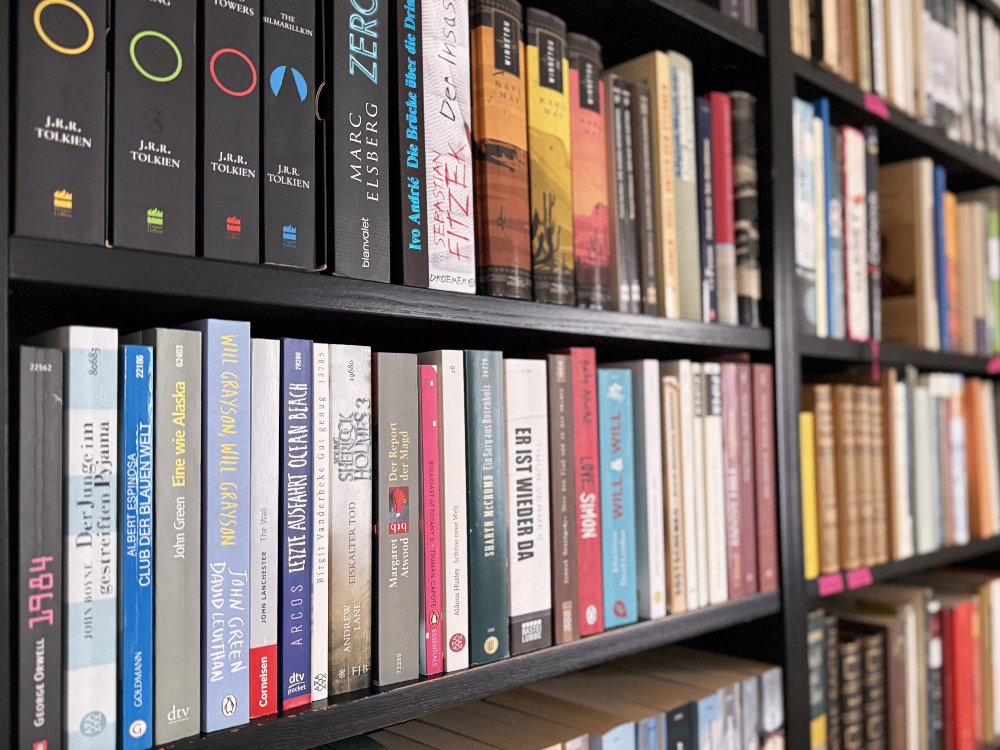

Hi, ich bin Nora!
Ich bin 22 Jahre alt, komme aus NRW und studiere aktuell Medieninformatik an der IU.
Ich liebe es, kreativ zu arbeiten, neue Dinge auszuprobieren und mich mit ganz unterschiedlichen Themen auseinanderzusetzen,
besonders dort, wo Gestaltung und Technik zusammenkommen.
Interessen
Musik
Musik begleitet mich schon lange und spielt in meinem Alltag eine große Rolle.
Meine Lieblingskünstler sind dabei genauso breit gefächert wie meine Interessen selbst.
Von Cro über Slipknot und Deftones bis hin zu The Neighbourhood oder Snoop Dogg ist alles dabei.
Neben dem Hören mache ich auch selbst Musik.
Ich spiele Gitarre, Geige und Ukulele und nutze Musik als kreativen Ausgleich, um neue Ideen entstehen zu lassen und abzuschalten.

Sport
Sport ist für mich ein wichtiger Ausgleich im Alltag und hilft mir dabei, einen klaren Kopf zu bekommen.
Ich bewege mich gerne und probiere auch hier verschiedene Dinge aus.
Dazu gehören Yoga, Training im Fitnessstudio und Wandern.
Ob zur Entspannung, zum Abschalten oder um neue Energie zu sammeln, Bewegung ist für mich ein fester Bestandteil meines Alltags
und unterstützt mich dabei, fokussiert und ausgeglichen zu bleiben.

Lesen
Lesen ist für mich eine Möglichkeit, abzuschalten und in andere Welten einzutauchen.
Ich habe viele Lieblingsbücher und lasse mich gern von unterschiedlichen Themen, Perspektiven und Geschichten inspirieren.
Besonders geprägt hat mich Der kleine Prinz von Antoine de Saint-Exupéry, das auch heute noch mein absolutes Lieblingsbuch ist, auch wenn es eigentlich eine Kindergeschichte ist.
Aktuell zählt Ikigai von Ken Mogi zu meinen Favoriten. Lesen begleitet mich im Alltag, gibt mir neue Denkanstöße und hilft mir dabei, zur Ruhe zu kommen.

Kunst
Kunst hat mich schon als Kind begleitet und früh begeistert.
In der Schule habe ich mich intensiv damit beschäftigt und sogar Kunst als Leistungskurs gewählt.
Seitdem ist Kunst ein fester Bestandteil meines Lebens geblieben.
Ich liebe es, Kunstmuseen zu besuchen und mich von unterschiedlichen Stilrichtungen, Techniken und Ausdrucksformen inspirieren zu lassen.
Gleichzeitig werde ich auch selbst gern kreativ. Ob Fotografie, Zeichnen, Malen oder Töpfern, Kunst ist für mich eine Möglichkeit, mich auszudrücken und Ideen sichtbar zu machen.